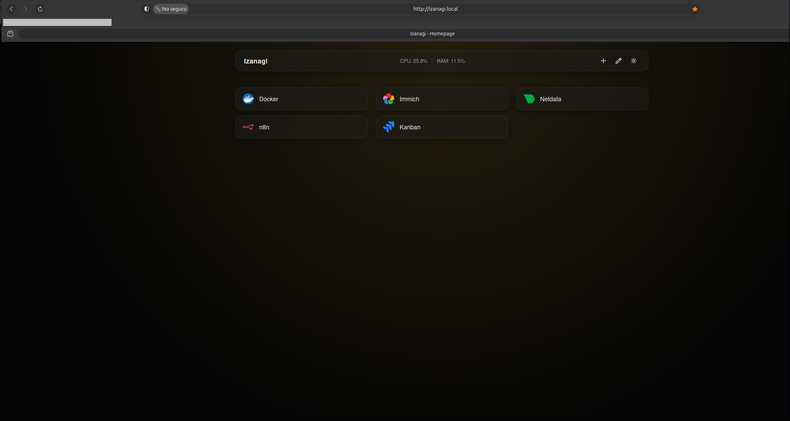
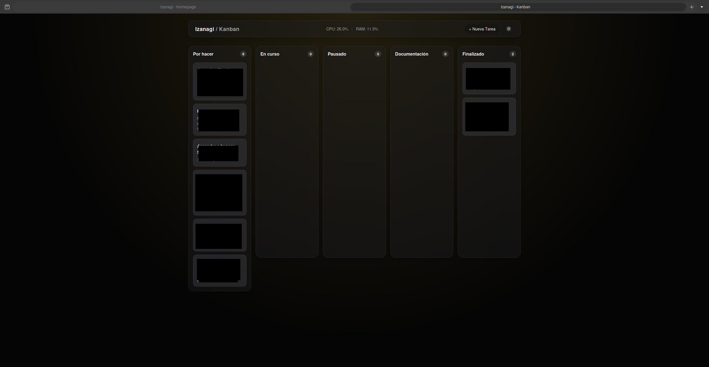

Productivity tool ecosystem built entirely from scratch. No frameworks, no external libraries. Completely native stack with Node.js, HTML5, CSS3, and vanilla JavaScript.
The Izanagi Portal is an own-tools ecosystem born from a concrete need: a centralised control panel for homelab services and a task manager adapted to a real technical workflow, without depending on Jira, Notion, or any third-party platform.
The decision to build it with a native stack (no React, no Vue, no jQuery) was deliberate. The goal was to demonstrate that with vanilla HTML, CSS, and JavaScript, plus a lightweight Node.js backend, it is possible to build a functional, fast, and maintainable tool that replicates the experience of production tools like Jira or Trello.
This project demonstrates deep understanding of web fundamentals: DOM manipulation, event handling, localStorage, fetch API, and client-server architecture from scratch.
Native HTTP server that exposes a REST API for reading system metrics (CPU, RAM) and serving static files. No Express, no frameworks.
All interactivity implemented in pure JavaScript: drag & drop, modals, localStorage persistence, and DOM updates without any framework.
Own design system based on CSS custom properties. Switchable light/dark theme, glassmorphism, and responsive design without CSS frameworks.
Dashboard services and Kanban tasks are persisted in browser localStorage. Data survives page reloads without needing a database.
The portal is the home page of the Izanagi ecosystem. It centralises access to all homelab services in a visual card grid, with real-time server metrics displayed in the top bar.
The top bar displays CPU% and RAM% updated every 5 seconds via requests to the Node.js backend API.
Add, edit, or remove services via a modal. Each service has a name, URL, and customisable SVG icon. Everything persists in localStorage.
Switchable theme toggle with a button. The preference is saved in localStorage and applied automatically on the next visit.
Each service card opens the service URL directly in a new tab. One click = immediate access to any homelab tool.
The Kanban Board is a task manager with 5 columns adapted to the real workflow of technical and infrastructure projects. Cards can be dragged between columns using native drag & drop.
Pending tasks yet to be started. Project and idea backlog.
Active tasks currently being worked on.
Temporarily blocked tasks waiting for resources or decisions.
Exclusive column for writing tasks, technical documentation, and writeups.
Completed tasks. History of finished work.
Drag & drop was implemented using the native HTML5 Drag and Drop API, without external libraries. Cards are draggable and each column is a drop target that updates the task status:
The Kanban is fully responsive. On small screens, columns stack vertically to maintain mobile usability.
The portal and Kanban running live on the homelab, accessed from the local network at http://izanagi.local:
Portal / Dashboard — homelab services

Kanban Board — task management

The Izanagi ecosystem evolves with new ideas. Here are the planned improvements: